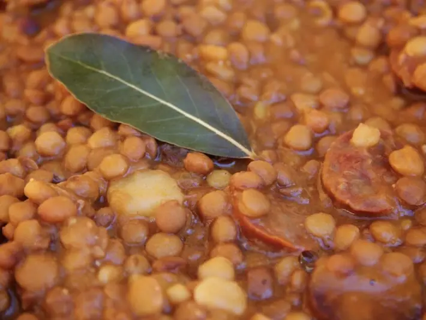

Фото: Jonathan Pincas from Leon, Spain, CC BY 2.0
.jpg){kind=link}
Чечевица с курицей
Сытное блюдо из коричневой чечевицы с курицей и овощами в одной сковороде
55 мин4 порц.338 ккал на порциюБ 37 · Ж 8 · У 30Интернациональная кухня
Продукты на 4 порц.
- Чечевица зелёная1 стак.
- Куриное филе400 г
- Лук репчатый1 шт
- Морковь1 шт
- Чеснок2 зуб.
- Томатная паста1,5 ст. л.
- Зира0,5 ч. л.
- Паприка1 ч. л.
- Вода3 стак.
- Соль1,2 ч. л.
- Растительное масло1,5 ст. л.
Как готовить
- Промойте чечевицу. Курицу нарежьте кубиками по 2 см, лук мелко, морковь натрите.
- Обжарьте курицу на масле в глубокой сковороде на сильном огне 5 минут до белого цвета.
- Добавьте лук и морковь, жарьте 5 минут на среднем огне, затем томатную пасту, чеснок, зиру и паприку на 1 минуту.
- Всыпьте чечевицу, влейте горячую воду и посолите.
- Тушите под крышкой на слабом огне 30-35 минут, пока чечевица не станет мягкой, а вода почти не впитается.
Совет. Солите не позже середины тушения, иначе чечевица дольше варится. Красная чечевица разварится в пюре, для этого блюда берите зелёную или коричневую.